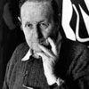

 By the age of 27 Armin Hofmann had already completed an apprenticeship in lithography and had begun teaching typography at the Basel School of Design. His colleagues and students were integral in adding to work and theories that surrounded the Swiss International Style, which stressed a belief in an absolute and universal style of graphic design. The style of design they created had a goal of communication above all else, practiced new techniques of photo-typesetting, photo-montage and experimental composition and heavily favored sans-serif typography.
He taught for several years at the Basel School of Design and he was not there long before he replaced Emil Ruder as the head of the school. The Swiss International Style, and Hofmann, thought that one of the most efficient forms of communications was the poster and Hofmann spent much of his career designing posters, in particularly for the Basel Stadt Theater. Just as Emil Ruder and Joseph Müller-Brockmann did, Hofmann wrote a book outlining his philosophies and practices. His Graphic Design Manual was, and still is, a reference book for all graphic designers.
From DesignHistory.com
In the history of visual communication, we see that almost all important technical discoveries of the past have found their way into industries dealing with visual reproduction. In fact, technical innovations affect society in no other domain so quickly and so radically as here, where human beings convey to others their knowledge, insight, inventions and plans.
Before movable type was a possibility for communication, one was restricted to the reproduction of simple information through wood engraving. We are all aware of the enormous social changes experienced during the Middle Ages due to the subsequent technology provided by letterpress printing. In the centuries that followed, the surface characteristics of the printing carrier improved. Etching and copperplate engraving allowed for more sophisticated statements, but the speed and quantity of that printing was not substantially greater than it had been with wood engraving and the block letter. Only lithography, which developed in the middle of the 19th century, enabled reproduction techniques to cope with the tasks that were imposed by the onset of the industrial age through:
- The ability to make more complex statements
- The introduction of a wider range of colors
- Faster production
- The use of larger formats
- Wider circulation
Any discussion concerning the future of the poster or speculation about the opportunities to be expected from modern communication techniques cannot overlook the astonishing work produced by the birth of lithography. These works fulfilled, and in principle continue to fulfill, the most important demands imposed by the large format: visibility, simplicity of message, originality of forms, singularity of color scheme and intellectual clarity. The ferment which emerged around 1900 in painting, music, architecture, design and also in posters, may have contributed to the noticeably confident mood which distinguished the beginning of the machine age.
As the designer no longer executes his visual ideas manually, but rather realizes them mechanically by means of electronically-controlled cameras, his relationship to content and expression, to form and color has changed. The whole of sensory perception has been shifted by the photographic image. It is certainly no exaggeration to say that today we stand before a situation similar to that which medieval man faced at the start of letterpress printing. The photographic way of seeing which has developed in contemporary industrial society seems to put our entire communication structure into question. Symbolic interpretation is required of an object represented photographically in black and white. However, any abstract traits disappear completely when the use of color is introduced. When we go from the black and white to the color photograph, quite certainly we have done more than merely add a broader dimension.
Color has driven photography entirely from the domain of 'reading' and banished it to the realm of 'viewing'. The image acquires an authenticity which seems comparable to life itself. Especially the advertising artist and the advertising expert have succumbed to the temptation to simulate reality in such an exact and reliable way. The medium is too brilliant, too simple, not to be used falsely. Only a few designers began to thoroughly investigate the phenomenon of photography at the dawn of its era. El Lissitzsky, Moholy-Nagy, Man Ray and later, in the 30s and 40s, Herbert Matter, Will Burtin, Herbert Bayer and others, sought in America to bring to the black and white image visual form appropriate to the medium. But too early those experiments were discontinued and the circle of people ready to pursue photographic research was too small, thus preventing the poster from being able to renew itself against the background of photography. The rapid advance of color photography made it seem untenable to question what the medium might be about. People were already busy with the next phenomenon: the movable color image on the television screen and the video text.
In the future, electronic advertising media will strongly compete with the poster. The poster has a chance of survival only if it recollects its most innate strength: size, clarity and simplicity. Of course, these formal necessities must be realized within the context of more complex information. This will require some effort on the part of the designer. Practically speaking, the designer of tomorrow will have to pursue research in the area of the sign. He will not be able to simply let the machine transfer a design onto the printing carrier. Reproduction techniques themselves have spread so pervasively that they can influence the content of a statement. Early lithographic posters are pioneers in the respect that they exhibit coherence between the visual idea and its reproducibility.
— Borrowed from MKGraphic.com
{kind=link}
{kind=link}
{kind=link}
{kind=link}
{kind=link}
{kind=link}
{kind=link}
{kind=link}
{kind=link}
{kind=link}
{kind=link}
{kind=link}